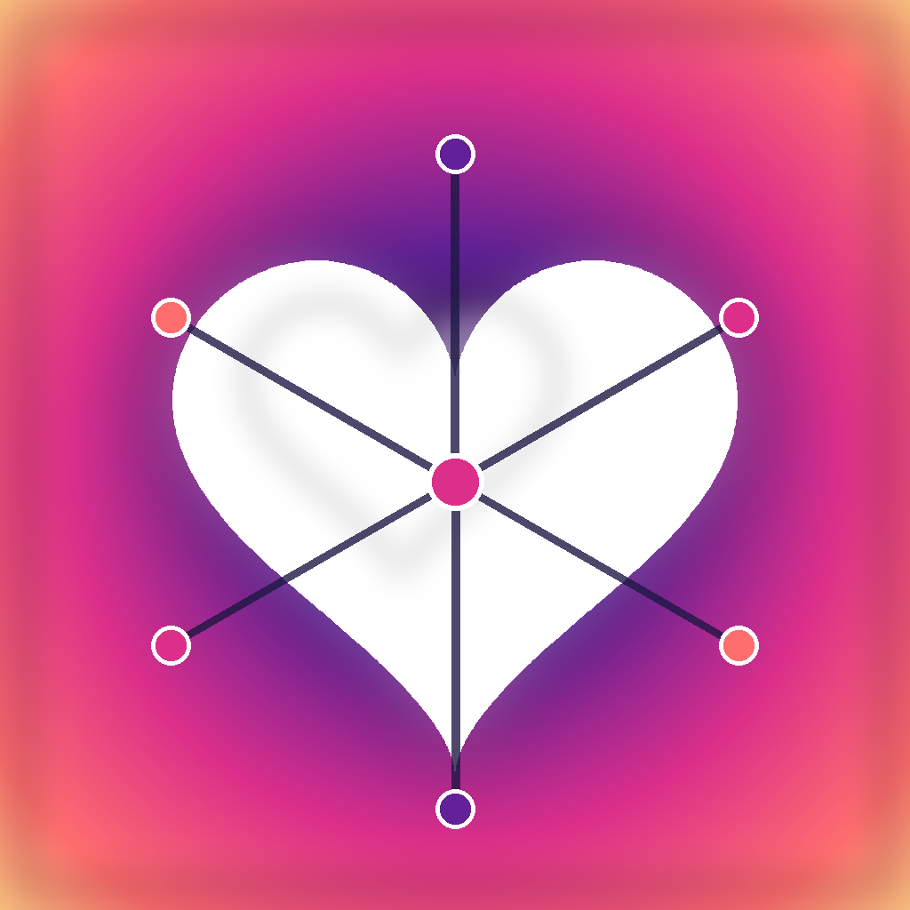

An open-source pipeline + iPhone app that streams Apple HealthKit data into your own Neo4j Aura graph. Built for the Neo4j Aura Agent Hackathon (Apr 15 – Jun 15 2026).
Bring your own Aura instance. Every installer deploys the backend against their own Aura DB — there is no shared cloud.
Reads HealthKit incrementally on-device and uploads only the delta to your Aura. Embeds your NeoDash dashboard for in-app viewing.
Tiny FastAPI service that reuses the existing ETL to MERGE samples
into Aura via the official Neo4j Python driver.
Curated SDL for Aura's GraphQL Data API — paste into Define my own in the Aura Console.
A GitHub Action wakes the Aura instance daily, queries it, and renders a tiny Recovery card with no raw biometrics.
From Apple Health to Aura Agent — the slide deck for the Neo4j Theatre @ WeAreDevelopers Berlin 2026 session.